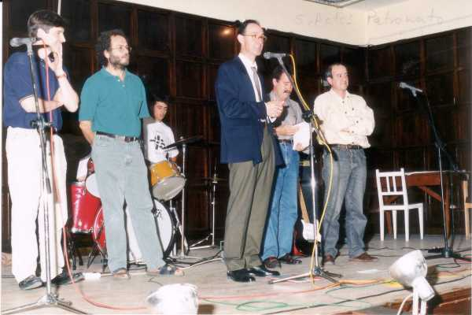

De momento te envío esta foto en la que inauguramos el curso 93-94. El mismo salón de actos y el mismo sitio de siempre. Las personas pasamos y las cosas permanecen. Es triste pero es así. Cuando veo a mi mujer dando brillo por ejemplo a un picaporte, siempre le digo: 'Cuando tú y yo estemos a un metro bajo tierra, ese hijoputa va a seguir brillando'. Y se pasan enseguida las ganas de frotar.
 |
volver